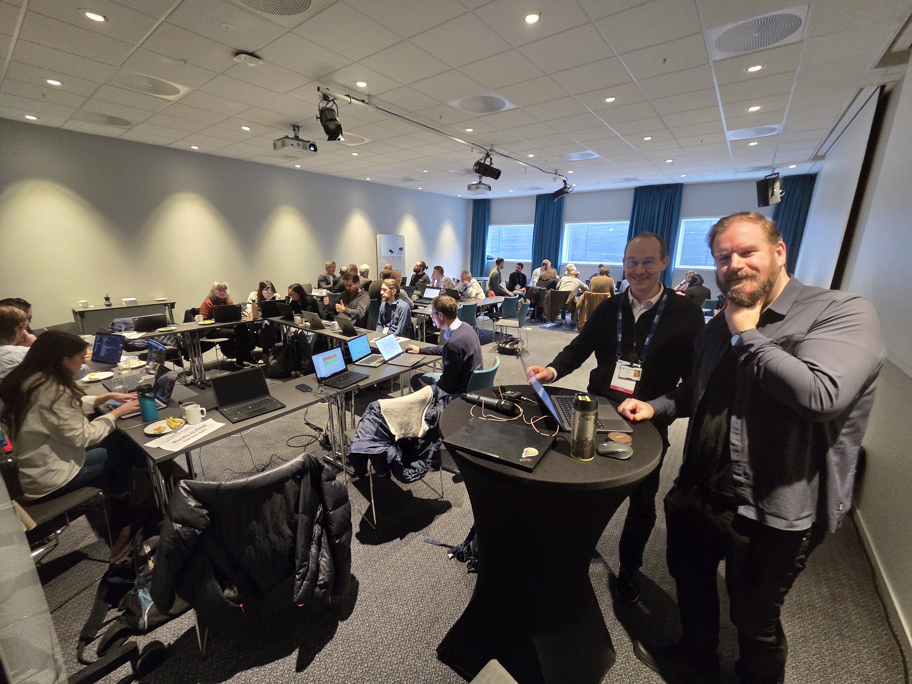
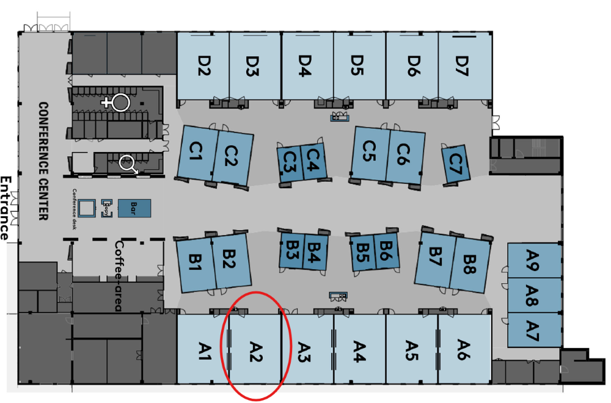

Links: Table of Contents | QA Report
Time: 10:00-11:00
Presentation: FHIR Hackathon pre meeting 1 - intro
Virtual meeting
Time: 10:00-11:00
Presentation: FHIR Hackathon pre meeting 2 and IG authoring
Virtual meeting
This fragment is not visible to the reader
| Type | Reference | Content |
|---|---|---|
| web | github.com |
|
| web | www.hl7.no |
IG © 2026+ HL7 Norge
. Package hl7.fhir.no.hackathon.2026#0.0.1 based on FHIR 4.0.1
. Generated 2026-02-12
Links: Table of Contents | QA Report |
| web | hl7norway.github.io | Intro to FHIR, IG and FHIR RESTful can be given on demand. Please review the HL7 FHIR video resources |
| web | github.com | Go to ig-mal and follow the instructions |
| web | www.nhn.no | The Norwegian FHIR Hackathon 2026 takes place somwhere sometime 2026. The Norwegian FHIR hackathon is a collaborative effort of HL7 Norway in cooperation with NHN , Helsedirektoratet , Bedredelt , Felleskatalogen and HL7 Norge |
| web | www.helsedirektoratet.no | The Norwegian FHIR Hackathon 2026 takes place somwhere sometime 2026. The Norwegian FHIR hackathon is a collaborative effort of HL7 Norway in cooperation with NHN , Helsedirektoratet , Bedredelt , Felleskatalogen and HL7 Norge |
| web | bedredelt.no | The Norwegian FHIR Hackathon 2026 takes place somwhere sometime 2026. The Norwegian FHIR hackathon is a collaborative effort of HL7 Norway in cooperation with NHN , Helsedirektoratet , Bedredelt , Felleskatalogen and HL7 Norge |
| web | www.felleskatalogen.no | The Norwegian FHIR Hackathon 2026 takes place somwhere sometime 2026. The Norwegian FHIR hackathon is a collaborative effort of HL7 Norway in cooperation with NHN , Helsedirektoratet , Bedredelt , Felleskatalogen and HL7 Norge |
| web | www.hl7.no | The Norwegian FHIR Hackathon 2026 takes place somwhere sometime 2026. The Norwegian FHIR hackathon is a collaborative effort of HL7 Norway in cooperation with NHN , Helsedirektoratet , Bedredelt , Felleskatalogen and HL7 Norge |
| web | vimeo.com | FHIR 101 |
| web | vimeo.com | How to read an implementation guide |
| web | vimeo.com | Newcomer orientation |
| web | fhir.fi | All the nordic countries are arranging FHIR hackathon in 2025/2026. More information on the Nordic FHIR Hackathon page |
| web | hl7norway.github.io | You need to register digitaly to secure a place for attending the Hackathon (anyone already on the organizers list do not have to register). On the actual Hackathon you need to collect your participation badge from 0930. The Hackathon starts at 0930 so we plan to collect badges in the first break of the day. |
| web | hl7norway.github.io | You need to register digitaly to secure a place for attending the Hackathon (anyone already on the organizers list do not have to register). On the actual Hackathon you need to collect your participation badge from 0930. The Hackathon starts at 0930 so we plan to collect badges in the first break of the day. |
| web | hl7norway.github.io |
Date: 27. october 2025 Time: 10:00-11:00 Presentation: FHIR Hackathon pre meeting 1 - intro Virtual meeting |
| web | hl7norway.github.io |
Date: 3. november 2025 Time: 10:00-11:00 Presentation: FHIR Hackathon pre meeting 2 and IG authoring Virtual meeting |
| web | teams.microsoft.com | PMD track link |
| web | teams.microsoft.com | OKT track link |
| web | teams.live.com | Terminology track link |
| web | teams.microsoft.com | IG Track link |
| web | hl7norway.github.io | Detailed results are discussed in the OKT IG repo . |
| web | fhir-hackathon-pmd.vercel.app | Demo app |
| web | hl7norway.github.io | The basic use cases are described in the track description page and includes building IG using the nordic terminology server and accessing the terminology API. |
| web | github.com | Add a pull request to kodeverk IG for the CodeSystem/ValueSet definitons. |
| web | finnkode.helsedirektoratet.no | Inspect finnkode.no and the API documentation for FAT-API . |
| web | fat.kote.helsedirektoratet.no | Inspect finnkode.no and the API documentation for FAT-API . |
| web | utviklerportal.nhn.no | PMD API documentation |
| web | utviklerportal.nhn.no | We will look at the proprietary OKT API from NHN, and discuss which FHIR resources and REST interactions we can translate the API into. |
| web | utviklerportal.nhn.no | The documentation of the current OKT API |
co-development.png 
|
|
hackathon-1.jpg  |
|
motesenter.png  |
rom-A5.png 
|
tree-filter.png 
|